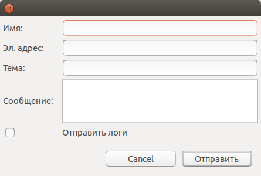

Пользователь имеет возможность отправить сообщение разработчикам непосредственно из среды разработки. Для этого необходимо в меню pgCodeKeeper выбрать пункт sent feedback.Откроетя окно отправки сообщений.
Заполняем необходимые поля. Желательно указать корректный электронный адрес для обратной связи. После заполнения полей нажать кнопку Отправить. Сообщение отправлено.
Примечание: рекомендуется отметить флажком пункт отправить логи для отправки более подробной информации.